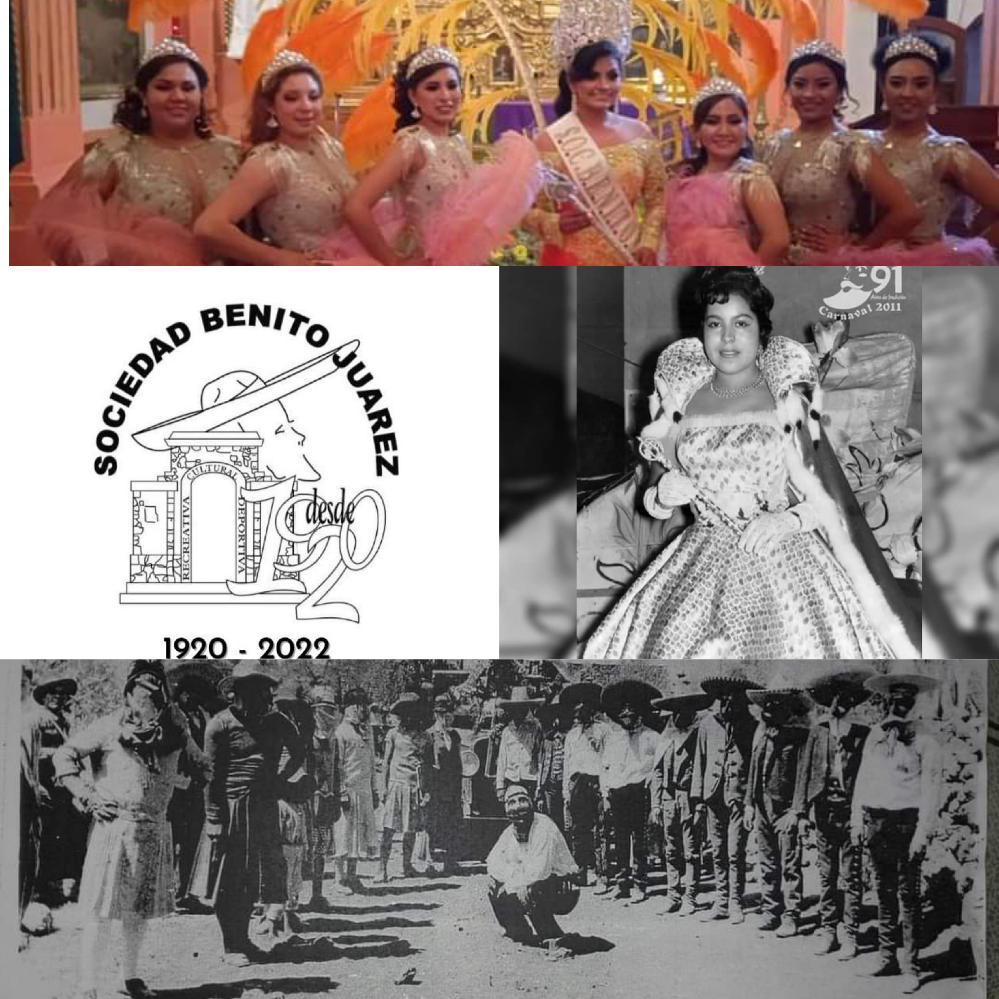

Fue el representado por la señora Marcelina Martínez Chirinos, y que más adelante dará origen a la Sociedad Mutualista Benito Juárez a partir de 1920. Posteriormente, en 1924 se reanuda el Carnaval como un grupo espontáneo, sin organización, representado por el señor Camilo Castañeda y otras personas más de los desaparecidos barrios de Tetlalpan, Santa Cruz y San Jacinto. En 1929 se forma la organización o grupo de Carnaval Sociedad Recreativa Benito Juárez, quitándole el nombre de Mutualista, ya que se presenta como un grupo organizado representado por un comité, los participantes de la comparsa y el carro alegórico y la reina del Carnaval.
DATO CURIOSO
En 1948 por desorganización y por falta de interés de los directivos y socios, a última hora participó la comparsa sin reina ni carro alegórico.